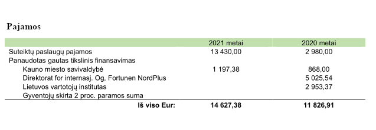

2021 metais Anthropos plėtojo atliekamų tyrimų lauką, jungėmės ir pradėjome ilgalaikius projektus su vietinaiais ir tarptautiniais partneriais. Taip pat tęsėme kultūrų reprezentavimo mokyklų vadovėliuose klausimą ir praplėme šią temą už mokyklų ribų - vesdamos seminarus ir rašydamos projektus NVO sektoriui. Taip pat, plėtėme šį klausimą ne vien kultūrinių reprezentacijų , bet ir elgsenos klausimuose ir pradėjome naują kryptį tai kultūrinio jautrumo įvairioms kultūrinėms, etninėms ir socialinėms grupėms užtikrinimo mokyklose temoje. Be visa ko, toliau rengėme kasmetines dirbtuves, seminarus ir veiklos bei rūpimų klausimų viešinimą.
Ką nuveikėme?
- • Pradėtas ir visus metus vykdytas, bei tebesitęsiantis projektas 2022 metais „Let’s Not Waste Food”. Projektas vykdomas kartu su Kauno Technologijos universiteto Maisto institutu, Suomijos natūraliųjų išteklių institutu (LUKE), Kopenhagos verslo mokykla (CBS), EIT FOOD, LIDL. Per šiuos metus atlikta literatūros apžvalga ir parengtas mokslinis straipsnis, parengta fokus grupių metodologija, Organizacija organizavo ir atliko dvejas fokus grupes ir jų analizę, rengiamos gairės apie maisto švaistymo mažinimą. Projektas finansuojamas Norden (Šiaurės ministrų taryba). 2021 01 01 – 2022 09 01;
- • Viešinome 2020 m. užbaigto projekto „Social Science for Social Action!” rezultatus socialinėse medijose ir savo internetiniame puslapyje;
- • Dalinomės Organizacijos patirtimi, skaitydamos pranešimą Jaunųjų sociologų ir antropologų konferencijoje „Application of Anthropological Knowledge in School Textbooks - Representations of Cultures" („Antropologijos žinių taikymas mokyklos vadovėliuose – kultūrų reprezentavimas“), 2021 03 26;
- • Atlikome MO muziejaus vykdomo projekto „Vizualinio mąstymo mainai mene: mokytojų projektas" dalyvių apklausos anketos parengimas ir rezultatų analizę, 2021 04 – 2021 06;
- • Vedėme seminarą „Reprezentuoti „kitą” - kalbėjimo apie bendruomenes iššūkiai” , organizuotą multikultūrinio neformalaus ugdymo centras "Padėk pritpati" ir skirtą Renginys skirtas su bendruomenėmis ir socialiniais projektais, etninėmis-kultūrinėmis mažumomis ir socialinėmis grupėmis dirbantiems menininkams, organizacijoms, bendruomenių atstovams 2021 05 28;
- • Vykstant mokyklų Bendrųjų ugdymo programų mokyklose atnaujinimui, teikėme pastabas Kultūrinės kompetencijos turiniui, Socialinio ugdymo bendrosioms nuostatoms, Pilietinio ugdymo kompetencijai ir programai, Istorijos ir Geografijos dalykų turiniui. Vėliau dirbome ir su istorikų metodine grupe -tai klasei.(2021 m.).
Čia galite susipažinti su visais siūlymais: BUP komentarai
Į kai kuriuos siūlymus buvo atsižvelgta. Ypač džiaugiamės, padarytu pokyčių ir įtrauktomis temomis į istorijos programą. Mūsų siūlymu į naujausiųjų laikų dalį bendrojoje istorijos programoje įtrauktas naujojo kolonializmo fenomenas, kaip tebeformuojantis pasaulio politiką, galios santykius ir prisidedantis prie globalaus skurdo problemos formavimosi ir egzistavimo. Priimtas ir mūsų pasiūlymas moksleivius supažindinti su skirtingomis kapitalizmo rūšimis ir šiuolaikinėmis ideologijomis, pavyzdžiui, suprasti kaip neoliberali globali politika veikia ir skurdo pasiskirstymą. Dėmesio bus skiriama socialiniams judėjimams, prasidėjusiems XX a. vid. ir formavusiems žmonių teisių vystymąsi visuomenėje, kaip juodaodžių, moterų, seksualinių mažumų, autochtonų judėjimai. Taip pat, mūsų siūlymu į programą įtrauktos sąvokos „etnocentrizmas”, „europocentrizmas”.
Čia galite susipažinti su atsižvelgtomis rekomendacijomis: Bendrųjų ugdymo programų atnaujinimai
- • Trečią vasarą įvyko trijų dienų antropologijos dirbtuvės jaunimui. 2021 metų tema: "Antropologijos dirbtuvės: socialinis kūnas ir šiuolaikinė visuomenė”.
Projektas finansuojamas Kauno m. savivaldybės, Iniciatyvos Kaunui programos, 2021 07 26 – 2021 07 28;
Keletas akimirkų iš dirbtuvių: Dirbtuvių nuotraukos
Dalyvių sukurti trumpi etnografiniai tekstai iš sensorinio pasivaikščiojimo po Kauną: Dalyvių tekstai
- • Rengėme Kintų moksleivių stovyklos „Vėtrungė“ veiklos organizavimo galimybių studiją. Studijos atlikimo metu atlikome kokybinį tyrimą – pusiau struktūruotus interviu su stovyklų organizatoriais, stovyklautojais. Taip pat gilinomės į stovyklų veiklą reglamentuojančius dokumentus, organizavome susitikimus ir dirbtuves su interesų grupėmis: Šilutės miesto savivaldybe, Šilutės profesinio mokymo centru ir Kintų bendruomene, nagrinėjome užsienio pavyzdžius. Projektą finansavo Viešoji įstaiga Šilutės profesinio mokymo centras, 2021 07 26 – 2021 11 26;
Su studija galite susipažinti čia: Vėtrungė.pdf
- • Gavome specialųjį paminėjimą Europos taikomosios antropologijos konferencijos „Why the World Needs Anthropologists” apdovanojimuose už 2020 metų iniciatyvą apie kultūrų reprezentavimus vadovėliuose. Vykome į konferenciją Prahoje, Čekijos Respublikoje, kur pristatėme savo projektą, 2021 09 10 – 2021 09 13;
Apdovanojimų akimirka: Apdovanojimai
- • Rengėme medžiagą ir vedėme dviejų dienų (8 ak. val.) nuotolinius mokymus vadovėlių autoriams ir turinio vertintojams apie apie skirtingų žmonių grupių ir bendruomenių diskriminaciją dėl rasės, tautybės, kalbos, kultūros, tikėjimo, socialinio statuso, lyties ir etninės kilmės, ir pagarbų kitų kultūrų ir grupių vaizdavimą vadovėliuose. Iš seminarų medžiagos parengta atmintinė. Seminarus finansavo Nacionalinė Švietimo Agentūra, 2021 09 23 ir 2021 09 30 dienomis;
- • Vedėme dirbtuves „Pojūčiai antropologiškai: kultūra, socialinė padėtis ir pojūčiai” „Estetikos Somelje” organizuojamuose nuotolinių renginių cikle „Mokslas ir pajauta: ar tavo pojūčiai yra tikrai tavo? Seminarą užsakė UAB Femina Bona, 2021 11 25;
- • 2021 metais įvykdėme 4-turias Kultūros paso edukacijas: dvejas edukacijas „Globalizacija ir etniškumas šiandienos pasaulyje” Vilniaus Lazdynų mokykloje, 2021 10 14 ir Marijampolės sav. Liudvinavo Kazio Borutos gimnazijoje, 2021 11 24. Dvejos „Antropologijos dirbtuvės: maistas ir klimato kaita” vyko Vilniaus Vilniaus Viršuliškių mokykloje, 2021 12 10. Finansavo Lietuvos kultūros ministerijos, Kultūros paso programa;
- • Rašėme ir teikėme projektus:
- „Cultural Representations and Education” Šiaurės ministrų Taryba Norden programa Baltijos-Šiaurės šalių nevyriausybinių organizacijų (NVO) koorperacijai (projektas negavo finansavimo);
- „Towards ethical cultural representations in advocacy work” ERASMUS+ Jaunimo darbuotojų mobilumo programai (projektas gavo finansavimą, bus įgyvendintas 2023 metais);
- „Kultūriškai jautrios ir saugios mokyklos link: tarpkultūrinių kompetencijų kėlimas mokyklų bendruomenėse” Aktyvių piliečių fondui, Didesnės paramos žmogaus teisėms poveikio sričiai (dar laukiamas atsakymas dėl projekto finansavimo);
- „Antropologijos dirbtuvės 2022: Miestas ir tautiškumas globalizacijos įtakoje - Kauno tapatybių (pa)tyrimaiIniciatyvos Kaunui” Iniciatyvos Kaunui (projektas gavo finansavimą);
- Kultūros paso programai dėl nuotolinių dirbtuvių „Antropologijos dirbtuvės: globali nelygybė ir kultūrų reprezentavimas” (patvirtinta), „Antropologijos dirbtuvės: globali nelygybė ir kultūrų reprezentavimas” (patvirtinta), „Antropologijos dirbtuvės: maisto sistema ir klimato kaita” (nepatvirtinta).
- • Veiklos ir rūpimų klausimų temomis kalbėjome:
-„Teatronas” laidoje „Kad neliktų tos įtampos: privilegija, prestižas ir kultūra”. Pokalbio įrašą galite pasižiūrėti čia: „Kad neliktų tos įtampos: privilegija, prestižas ir kultūra”
- Interviu žurnale „Savaitė” apie maistą, maisto švaistymą ir klimato kaitą;
- Kornelija Čepytė dalyvavo projekto Renkuosi mokyti organizuotoje konferencijoje "Mokyklos (ne)standartas", kur dalinosi įžvalgomis apie klimato kaitos ir migracijos akivaizdoje kilsiančius iššūkius švietimo sistemai, 2021 11 09. Renginio akimirkas galima pamatyti čia: Renginio akimirkos
- Labai dėkojame prie mūsų 2021 metais prisidėjusiems praktikantams Aleksandrui Krochmaliui ir Lukui Norkui iš Vilniaus universiteto Azijos studijų programos ir Živilei Vaicekauskaitei iš Vytauto Didžiojo universiteto Sociologijos ir antropologijos programos.
